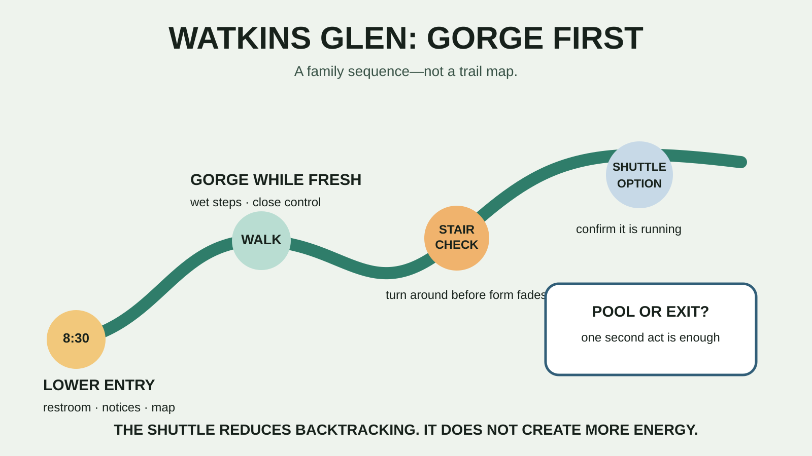

FINGER LAKES · STAIR-HEAVY FAMILY DAY
Watkins Glen With Kids: The Gorge-First Plan That Respects the Stairs
Walk the gorge while legs and patience are fresh, use the shuttle as a tool instead of a promise, and do not turn a waterfall into an endurance contest.

Who this day fits—and who should skip it
Good fit: school-age kids who can follow directions near drop-offs, manage uneven wet steps and stay with an adult in a crowded gorge. Skip or simplify: families that need a stroller route, anyone with balance or stair limitations, children who bolt, groups arriving during active thunderstorms, or anyone bringing a pet and expecting to use the Gorge Trail.
New York State Parks does not publish a simple age or height minimum for the trail. That does not make it appropriate for every child. The meaningful test is controlled movement on long stair sequences, not a birthday. If the group needs an easier waterfall walk, use the Taughannock family plan instead.
Current facts to check before leaving
- Address: the lower entrance and visitor center are at 1009 N. Franklin Street, Watkins Glen, NY 14891. The official page also lists campground and upper entrances.
- Drive: plan roughly 1 hour 25 minutes to 1 hour 50 minutes from the Syracuse area, depending on your start, traffic and route. That is a planning estimate; check navigation on departure.
- Hours: the park is open year-round dawn to dusk. The Gorge Trail opened May 9 for the 2026 season and normally closes around mid-October; rim trails remain the year-round option.
- Vehicle fee: the official 2026 page lists $10 per vehicle when collected, including pool access. Collection is listed sunrise to sunset from mid-May to mid-October.
- Shuttle: $6 per person each way. For 2026 it is listed daily June 28 through September 7, then weekends through the mid-October trail season. Operations and space can change; call before building the day around it.
- Pool: the posted 2026 season is June 27 through September 7, noon–5:45 p.m. weekdays and 11:30 a.m.–6:45 p.m. weekends. Confirm same-day operation with the park.
- Reservations: ordinary day use does not list a reservation requirement. Camping is by reservation through ReserveAmerica.
- Pets: pets are not allowed on the Gorge Trail. Up to two pets may be allowed in other day-use or camping areas under the posted leash, supervision and rabies-document rules, with additional exclusions.
The family itinerary that avoids the worst mistake
8:30 a.m. — Lower entrance, restroom, conditions
Arrive before the main crowd, use the restroom and read every current closure and shuttle notice. Photograph the official map. Ask staff whether the entire Gorge Trail, upper exits and shuttle are operating. If the answer changes the plan, change the plan before the kids see the first waterfall.
8:45 a.m. — Gorge first
Enter only if the trail is open and conditions feel stable. Keep one adult in front and one behind when possible. The goal is not a mile count; it is a controlled climb through the best scenery. Stop where the path widens safely, not in a stair lane or under a dripping overhang where another group must squeeze around you.
9:30 a.m. — The stair checkpoint
Ask three questions: Are feet still controlled? Is anyone grabbing the wall because balance is fading? Can the group descend safely if the shuttle disappears? If one answer is bad, turn around. The return requires attention too. Do not spend every usable step on the climb.
10:30 a.m. — Choose the exit
Option A: descend the route you know before it becomes crowded. Option B: continue to an open entrance only after confirming the shuttle is actually running and everyone can manage the remaining trail. Option C: use a rim connection shown on the current official map, understanding that it does not erase distance or elevation.
Noon — Food before the second act
Use a designated picnic area or a planned food stop. The park lists food as an amenity, but operating hours and selection are not a family nutrition plan. Bring water and a simple lunch in the car. Use the day-trip cooler guide if perishables are involved.
1:00 p.m. — Pool, playground or exit
If the pool is open, the weather is good and the kids still have judgment, swimming can be the second act. Bring suits and dry clothes but do not promise the pool before verifying it. The smarter alternative is a short playground stop or leaving. A successful gorge morning does not need four more attractions attached to it.
What to pack
- Closed-toe shoes with useful wet-surface traction; no loose slides for the gorge.
- Water, simple food, required medication and compact first aid.
- A light layer and a fully dry change of socks and clothes in the car.
- Sun protection for exposed sections and rain gear that does not block a child's view of the steps.
- A charged phone, current map screenshot and enough payment flexibility for parking or shuttle changes.
- Swim gear only if the pool is part of the verified plan.
The family hiking daypack guide keeps the load realistic. The new family sun-protection system covers shade, clothing and sunscreen without pretending one product solves the whole day.
Food, restrooms and accessibility
Use entrance facilities before committing to the gorge; do not assume a restroom will appear at the exact moment a child needs it. New York State Parks directs visitors to call the park at 607-535-4511 for current accessibility information. The state also warns that the gorge tour includes many stone steps and can be difficult for some visitors.
The lower visitor area, upper day-use facilities and pool are different access questions from the Gorge Trail. Call about the exact parking, restroom, pool and trail access your family needs. A stroller-friendly entrance does not make the gorge stroller-friendly.
Weather, water and hard safety boundaries
Wet stone is normal here; rushing is optional. Stay on open paths, obey barriers and keep hands available for balance. Do not enter Glen Creek or climb toward waterfalls. A photograph is not worth leaving the maintained route.
If thunder is audible, the gorge, a rock overhang and a picnic shelter are not safe shelters. Move to a substantial building or enclosed hard-topped vehicle and follow National Weather Service guidance to wait at least 30 minutes after the last thunder. If heavy rain, flooding concerns or closures appear, use the rim or leave. Rain gear changes comfort, not hydrology.
Kid-meltdown and bad-weather backups
Early fade: turn around, eat, and call the main waterfall the win. Shuttle unavailable: descend before fatigue; do not argue with the schedule. Gorge closed: walk only the open rim segment your group can handle, use day-use facilities, or leave for a different day. Storm: shelter in the vehicle and abandon the gorge if the safe weather window does not return.
The family day-trip system is built for this exact decision: preserve the family, not the itinerary. If rain is the only problem, consult the rain-gear guide; if thunder is the problem, go inside.
Official check-before-you-go sources
Operational details were checked August 26, 2026 and are volatile. Verify trail status, shuttle, pool, fees, parking, pets and accessibility on the day of travel.
- New York State Parks: Watkins Glen State Park
- New York State Parks: maps and documents
- National Weather Service: lightning safety
MAKE THE WEEKEND COUNT
Useful beats heroic.
Pick the version your family can finish well, then leave enough energy for the ride home.
More family plans